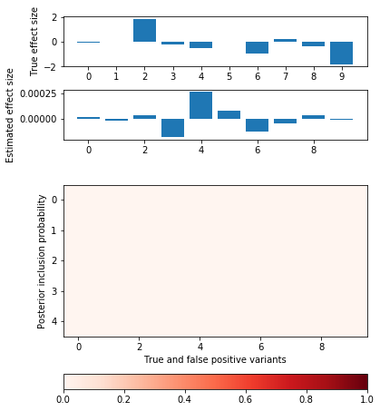
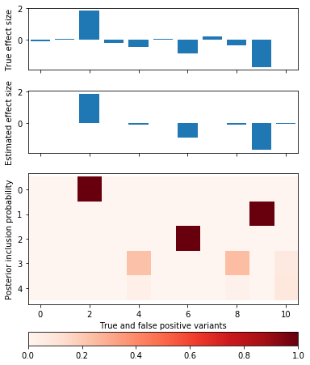
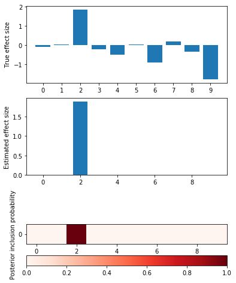
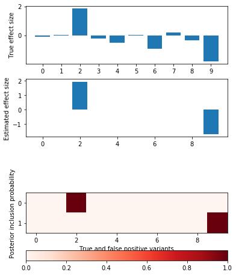
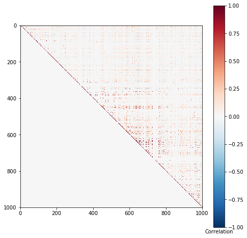
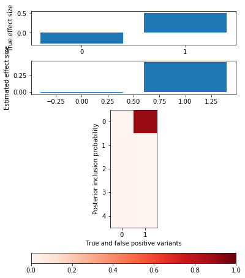

Fine mapping idea
Table of Contents
Proposed model
\[ p(\mathbf{y} \mid \mathbf{x}, \mathbf{w}) = N(\mathbf{y}; \mathbf{x} \mathbf{w}', v^{-1} \mathbf{I}) \] \[ \mathbf{w} = \sum_k z_{kj} b_{kj} \]
\[ p(b_{kj} \mid z_k = 1, v, v_b) = N(b_{kj}; 0, v^{-1} v_b^{-1}) \] \[ p(b_{kj} \mid z_k = 0) = \delta(b_{kj}) \]
\[ p(z_k \mid \mathbf{p}) = \mathrm{Multinomial}(z_k; 1, \mathbf{p}) \]
\[ q(b_{kj} \mid z_{kj} = 1, \mu, \phi) = N(b_{kj}; \mu_{kj}, \phi_{kj}^{-1}) \] \[ q(b_{kj} \mid z_{kj} = 0, \mu, \phi) = \delta(b_{kj}) \]
\[ q(z_k \mid \pi) = \mathrm{Multinomial}(z_k; 1, \mathbf{\pi}_k) \]
Proposed algorithm
def elbo(n, p, d, xr, xrk, y, pip, mean, var, effect_var, residual_var): error = np.square(y - xr).sum() error -= np.square(xrk).sum() # var doesn't depend on factor? error += (d * (pip * (np.square(mean) + var.T)).sum(axis=0)).sum() error /= residual_var error += n * np.log(residual_var) error *= -.5 # Assume prior probability 1/p for each variant kl_z = (pip * (np.log(pip) + np.log(p))).sum() kl_b = .5 * (pip * (1 + np.log(effect_var * residual_var) - np.log(var.T) + (np.square(mean) + var.T) / (effect_var * residual_var))).sum() return error, kl_z, kl_b def coordinate_ascent(x, y, effect_var, residual_var, l=5, num_epochs=200): n, p = x.shape # Prior pi = np.ones((p, 1)) # Variational parameters pip = np.zeros((l, p)) mean = np.zeros((l, p)) # Make sure everything is two dimensional to catch numpy broadcasting gotchas d = np.einsum('ij,ij->j', x, x).reshape(-1, 1) var = (effect_var * residual_var / (effect_var * d + 1)).reshape(-1, 1) # Precompute more things xy = x.T.dot(y) xr = np.dot(x, (pip * mean).sum(axis=0, keepdims=True).T) elbo_ = None trace = [] for epoch in range(num_epochs): for k in range(l): xr -= np.dot(x, (pip * mean)[k:k + 1].T) mean[k:k + 1] = (var / residual_var * (xy - x.T.dot(xr))).T pip[k:k + 1] = (pi * np.exp(.5 * (np.log(var / (effect_var * residual_var)) + np.square(mean[k:k + 1].T) / var))).T pip[k] /= pip[k].sum() xr += np.dot(x, (pip * mean)[k:k + 1].T) xrk = x.dot((pip * mean).T) error, kl_z, kl_b = elbo(n, p, d, xr, xrk, y, pip, mean, var, effect_var, residual_var) update = error - kl_z - kl_b trace.append([update, error, kl_z, kl_b]) elbo_ = update return {'pip': pip, 'mean': pip * mean, 'var': var, 'elbo': elbo_, 'trace': trace}
def plot_categorical_slab_fit(s, opt): plt.clf() q = np.logical_or(s.theta != 0, opt['pip'].sum(axis=0) > 0.1) fig, ax = plt.subplots(3, 1, gridspec_kw={'height_ratios': [1, 1, opt['pip'].shape[0]]}) fig.set_size_inches(6, 8) ax[0].bar(np.arange(np.sum(q)), s.theta[q]) ax[0].set_xticks(np.arange(q.sum())) ax[0].set_ylabel('True effect size') ax[1].bar(np.arange(np.sum(q)), opt['mean'].sum(axis=0)[q]) ax[1].set_ylabel('Estimated effect size') im = ax[2].imshow(opt['pip'][:,q], cmap=colorcet.cm['Reds'], vmin=0, vmax=1) ax[2].set_yticks(np.arange(opt['pip'].shape[0])) ax[2].set_ylabel('Posterior inclusion probability') ax[2].set_xlabel('True and false positive variants') plt.colorbar(im, ax=ax[2], orientation='horizontal')
Null simulation
x = np.random.binomial(2, 0.5, size=(500, 1000)) y = np.random.normal(size=(500, 1)) opt = coordinate_ascent(x, y, effect_var=1, residual_var=y.var(), l=5, num_epochs=10) pd.DataFrame(opt['trace'], columns=['elbo', 'error', 'kl_z', 'kl_b'])
elbo error kl_z kl_b
0 -4256.800943 -4237.421683 0.329539 19.049720
1 -4235.690940 -4216.320378 0.320814 19.049748
2 -4228.373109 -4209.004873 0.318495 19.049741
3 -4221.334778 -4201.968795 0.316248 19.049735
4 -4214.629746 -4195.265910 0.314107 19.049729
5 -4208.239606 -4188.877816 0.312067 19.049723
6 -4202.147187 -4182.787349 0.310121 19.049718
7 -4196.336301 -4176.978323 0.308265 19.049713
8 -4190.791683 -4171.435481 0.306494 19.049708
9 -4185.498939 -4166.144433 0.304803 19.049703
plot_categorical_slab_fit(s, opt)

Idealized simulation
Simulate from a linear model:
\[ f_j \sim U(0.01, 0.5) \] \[ x_{ij} \sim Binomial(2, f_j) \] \[ \beta_j \mid z_j \sim N(0, 1) \] \[ y \sim N(X \beta, \frac{1}{h^2}\left(V[X\beta] - 1 \right)) \]
with nwas.simulation.simulation(p=1000, pve=0.5, annotation_params=[(10, 1)], seed=0) as s: x, y = s.sample_gaussian(n=500) x = x.astype('float32') y = y.reshape(-1, 1).astype('float32')
Fix the residual variance to the true value used in the simulation.
opt = coordinate_ascent(x, y, effect_var=1, residual_var=s.residual_var, l=5, num_epochs=10) pd.DataFrame(opt['trace'], columns=['elbo', 'error', 'kl_z', 'kl_b'])
elbo error kl_z kl_b
0 -221817.516715 -221775.630169 25.352916 16.533631
1 -228254.989057 -228213.282939 25.130829 16.575289
2 -228515.970511 -228474.287076 25.105591 16.577845
3 -228456.315742 -228414.609651 25.125409 16.580682
4 -228396.411357 -228354.673039 25.153813 16.584505
5 -228336.132212 -228294.354731 25.188135 16.589346
6 -228293.771055 -228251.918451 25.255835 16.596769
7 -228360.679959 -228318.612251 25.456309 16.611399
8 -228784.313766 -228741.694470 25.979550 16.639746
9 -229490.503252 -229447.284226 26.550417 16.668608
plot_categorical_slab_fit(s, opt)

Try restricting to a single factor.
opt = coordinate_ascent(x, y, effect_var=1, residual_var=s.residual_var, l=1, num_epochs=10) pd.DataFrame(opt['trace'], columns=['elbo', 'error', 'kl_z', 'kl_b'])
elbo error kl_z kl_b
0 -100870.914631 -100860.191834 6.907755 3.815042
1 -100870.914631 -100860.191834 6.907755 3.815042
2 -100870.914631 -100860.191834 6.907755 3.815042
3 -100870.914631 -100860.191834 6.907755 3.815042
4 -100870.914631 -100860.191834 6.907755 3.815042
5 -100870.914631 -100860.191834 6.907755 3.815042
6 -100870.914631 -100860.191834 6.907755 3.815042
7 -100870.914631 -100860.191834 6.907755 3.815042
8 -100870.914631 -100860.191834 6.907755 3.815042
9 -100870.914631 -100860.191834 6.907755 3.815042
plot_categorical_slab_fit(s, opt)

Add factors one at a time
opt = coordinate_ascent(x, y, effect_var=1, residual_var=s.residual_var, l=2, num_epochs=10) pd.DataFrame(opt['trace'], columns=['elbo', 'error', 'kl_z', 'kl_b'])
elbo error kl_z kl_b
0 -182282.947936 -182261.799655 13.815511 7.332770
1 -188764.718437 -188743.531604 13.815511 7.371323
2 -188775.749384 -188754.562485 13.815511 7.371388
3 -188775.767889 -188754.580990 13.815511 7.371388
4 -188775.767920 -188754.581021 13.815511 7.371388
5 -188775.767920 -188754.581021 13.815511 7.371388
6 -188775.767920 -188754.581021 13.815511 7.371388
7 -188775.767920 -188754.581021 13.815511 7.371388
8 -188775.767920 -188754.581021 13.815511 7.371388
9 -188775.767920 -188754.581021 13.815511 7.371388
plot_categorical_slab_fit(s, opt)

Harder simulation
Use real LD from GEUVADIS genotypes.
srun --partition=broadwl --mem=8G plink --memory 8000 --vcf /project/compbio/geuvadis/genotypes/GEUVADIS.chr1.PH1PH2_465.IMPFRQFILT_BIALLELIC_PH.annotv2.genotypes.vcf.gz --make-bed --out 1
geuvadis_chr1 = pyplink.PyPlink(os.path.join(os.getenv('SCRATCH'), 'spikeslab', '1')) x = np.zeros((geuvadis_chr1.get_nb_samples(), s.p), dtype=np.float32) for i, (_, geno) in enumerate(geuvadis_chr1): if i >= x.shape[1]: break x[:,i] = geno.astype(np.float32) x = np.ma.masked_equal(x, -1)
def plot_ld(x): w = x - x.mean(axis=0) w /= 1e-8 + w.std(axis=0) corr = w.T.dot(w) / w.shape[0] plt.clf() plt.gcf().set_size_inches(8, 8) plt.imshow(np.triu(corr), cmap='RdBu_r', vmin=-1, vmax=1) cb = plt.colorbar() cb.ax.set_xlabel('Correlation') plot_ld(x)

Simulate a problem where causal variants almost certain to be in tight LD.
s.estimate_mafs(x) annotation = np.zeros(s.p) annotation[600:610] = np.ones(10) s.load_annotations(annotation) s.sample_effects(pve=0.5, annotation_params=[(0, 1), (2, 1)], permute=True) x = (x - x.mean(axis=0)).filled(0) y = s.compute_liabilities(x).reshape(-1, 1)
opt = coordinate_ascent(x, y, effect_var=1, residual_var=s.residual_var, l=5, num_epochs=10) pd.DataFrame(opt['trace'], columns=['elbo', 'llik', 'kl_z', 'kl_b'])
elbo llik kl_z kl_b
0 -219.908757 -200.251698 8.487061 11.169998
1 -219.875655 -200.537041 8.216742 11.121872
2 -220.072682 -200.806115 8.163078 11.103489
3 -220.145278 -200.903071 8.147945 11.094261
4 -220.163084 -200.926393 8.144994 11.091697
5 -220.164622 -200.928121 8.145114 11.091388
6 -220.163479 -200.926487 8.145488 11.091504
7 -220.162768 -200.925524 8.145652 11.091592
8 -220.162557 -200.925248 8.145688 11.091621
9 -220.162536 -200.925225 8.145687 11.091625
plot_categorical_slab_fit(s, opt)
